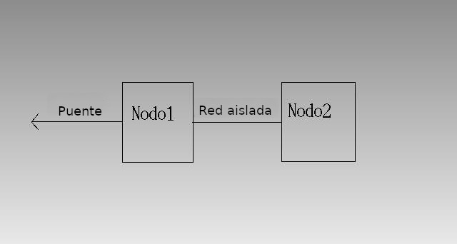

Este es el escenario que vamos a crear en este ejercicio, para que os hagáis una idea:

Crear un dominio conectado a la red interna
Primero, creamos la red interna como vimos este fabuloso artículo, y cuando ya la tengamos lista, instalamos el dominio con virt-install, yo he aprovechado una imagen de Debian 11 que tenía por ahí:
virt-install --name nodo1_lara --disk size=10 --memory 1024 --network red_interna --cdrom ./debian-11.0.0-amd64-netinst.iso
Esperamos a que termine la instalación.
Clonar un dominio con virt-clone
Vamos a clonar el dominio nodo1_lara:
virt-clone --name nodo2_lara --original nodo1_lara --auto-clone
Una vez clonado, entramos en la segunda máquina para cambiar el nombre del host, editando los ficheros /etc/hosts y /etc/hostname, ya que tendrá el mismo nombre que el nodo1. Después, si vemos que no tiene red, le echamos un vistazo al fichero /etc/network/interfaces para comprobar si el nombre de la interfaz es la correcta.
Conectar ambos nodos con una red aislada
Ahora es el momento de crear una red muy aislada para conectar el nodo1 con el nodo2, pero sin estar conectada al host. Para ello, generamos el siguiente fichero XML:
<network ipv6='yes'>
<name>muyaislada</name>
<uuid>387f45f6-d292-49be-8d66-9d88caed0152</uuid>
<bridge name='virbr2' stp='on' delay='0'/>
<mac address='52:54:00:ca:08:aa'/>
</network>
La añadimos al registro de QEMU con virsh:
virsh -c qemu:///system net-create --file ./muyaislada.xml
La iniciamos con "net-start" y la añadimos en caliente a cada máquina:
virsh -c qemu:///system net-start muyaislada
virsh -c qemu:///system attach-interface --domain nodo1_lara --type network --source muyaislada --persistent
virsh -c qemu:///system attach-interface --domain nodo2_lara --type network --source muyaislada --persistent
Después, entramos en las dos máquinas y las configuramos de forma estática:
#Red aislada del nodo1
auto ens8
iface eth0 inet static
address 192.168.10.2
netmask 255.255.255.0
#Red aislada del nodo2
auto ens8
iface eth0 inet static
address 192.168.10.3
netmask 255.255.255.0
Es la hora de soltar amarras. Desconectemos la red interna de tipo NAT del nodo2 especificando la dirección MAC de la interfaz:
virsh -c qemu:///system detach-interface --domain nodo2_lara --type network --mac 52:54:00:27:d0:21
Ahora, la segunda máquina se ha quedado completamente aislada.
Crear un puente conectado al nodo1
Creamos en nuestro anfitrión una nueva interfaz de tipo bridge, así que nos dirigimos al fichero /etc/network/interfaces y añadimos el siguiente contenido (sustituyendo "enp2s0" por el nombre de nuestra interfaz principal):
#Puente
auto br0
iface br0 inet dhcp
bridge_ports enp2s0
Reiniciamos el ordenador y creamos el fichero XML de la red puente:
<network>
<name>host-bridge</name>
<forward mode="bridge"/>
<bridge name="br0"/>
</network>
Y como hicimos con la red aislada, la registramos con QEMU, la iniciamos y la adjuntamos al nodo1:
virsh -c qemu:///system net-create --file ./bridge.xml
virsh -c qemu:///system net-start host-bridge
virsh -c qemu:///system attach-interface --domain nodo1_lara --type network --source host-bridge --persistent
Al final, el nodo1 tendrá la red interna, la aislada y el puente:
Mientras que en el nodo2 solo estará la aislada, conectada al nodo1: